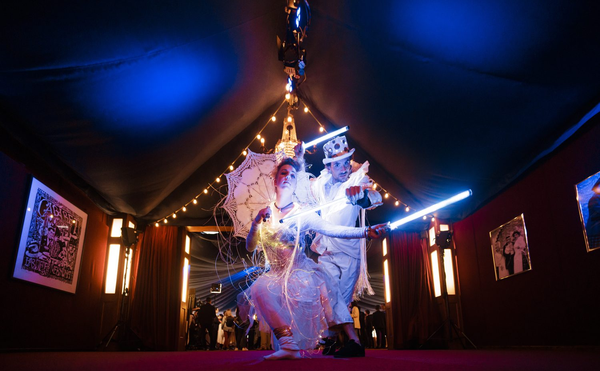
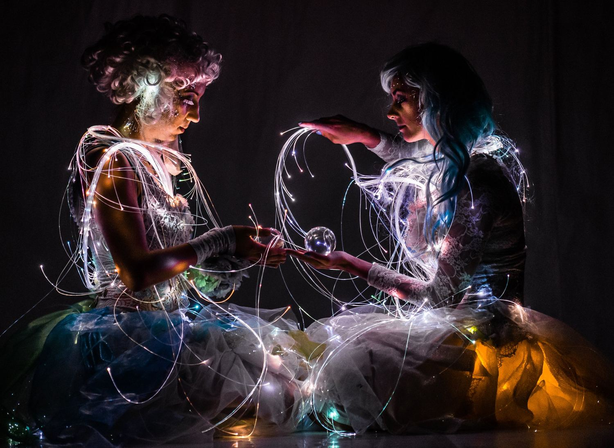
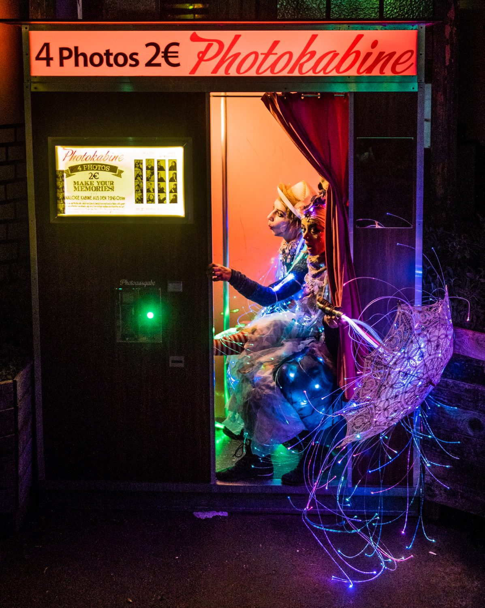
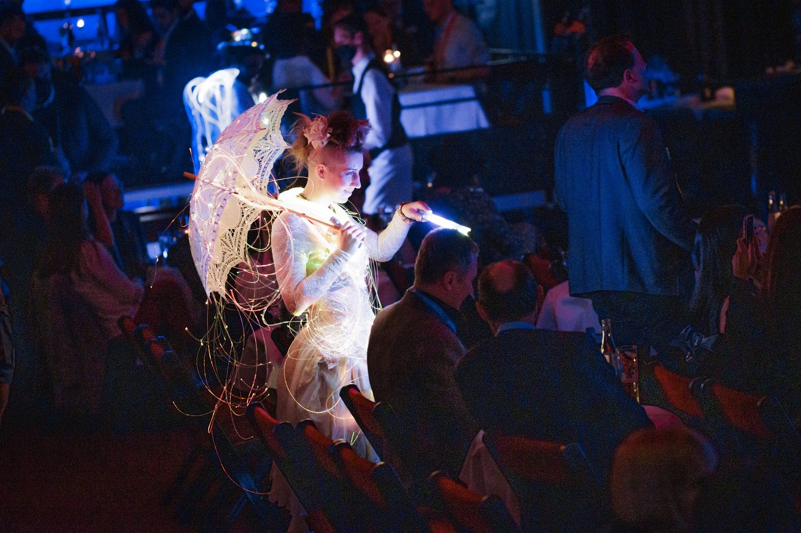
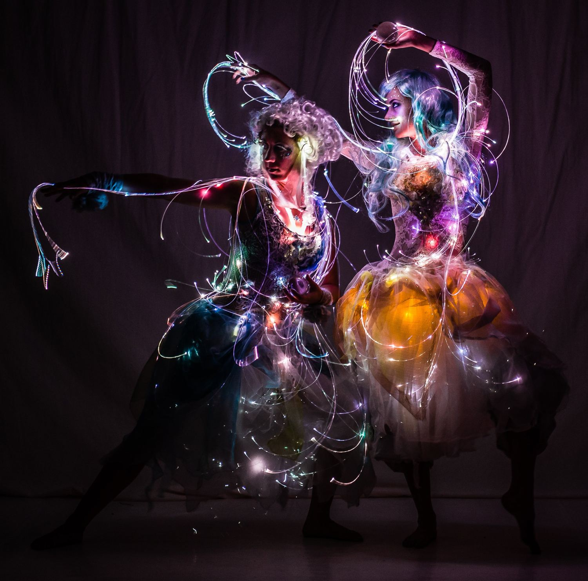
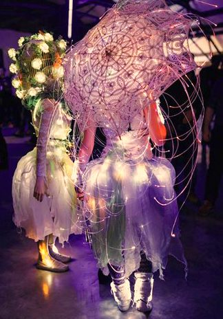

Do the costumes need darkness?
The fibre optics shine brightest in dim light or darkness — foyers, evening gardens, dance floors and dark halls are perfect.
Two beings of light drifting through the room like lanterns from the deep sea.

Aqua Lumières are creatures from a luminous underwater world. Hundreds of fibre-optic strands flow from their gowns, parasols and hair like the tentacles of glowing jellyfish, shimmering in slowly changing colours.
In baroque curls, lace and tulle they drift silently through foyers, gardens and dance floors, pause for a moment with your guests and let crystal spheres catch the light — quiet, poetic and utterly photogenic.
The most elegant of the LED walking acts: as a duo or as a single figure, in several rounds of 20 to 30 minutes.






The fibre optics shine brightest in dim light or darkness — foyers, evening gardens, dance floors and dark halls are perfect.
The act is designed as a duo, and a single Aqua Lumières figure is possible too — just tell Ley what fits your event.
Lucina is the bringer of light — moving gracefully through the crowd, bringing gifts and wonder to those who dare to believe in magic and dreams.
One of the fifty daughters of the old man of the sea: sailors’ songs and longing melodies by day, fireflies and a glowing gown once night falls.
Vaudeville and vintage circus, Golden Twenties, Candyland, maritime, floral, fairytale and fantasy — solo or in a larger ensemble.